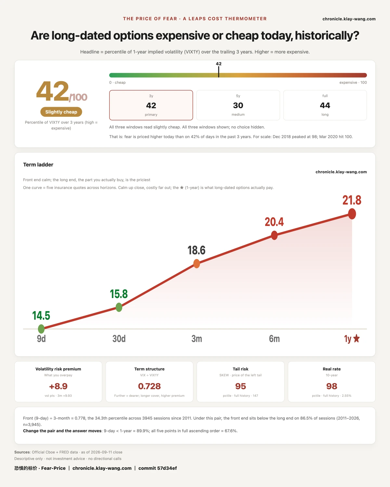
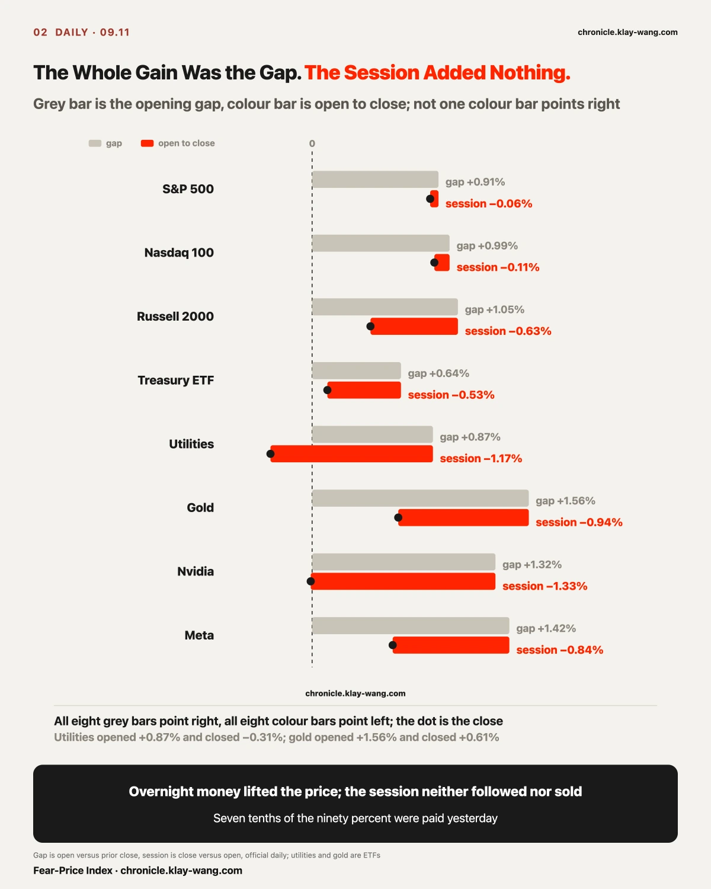
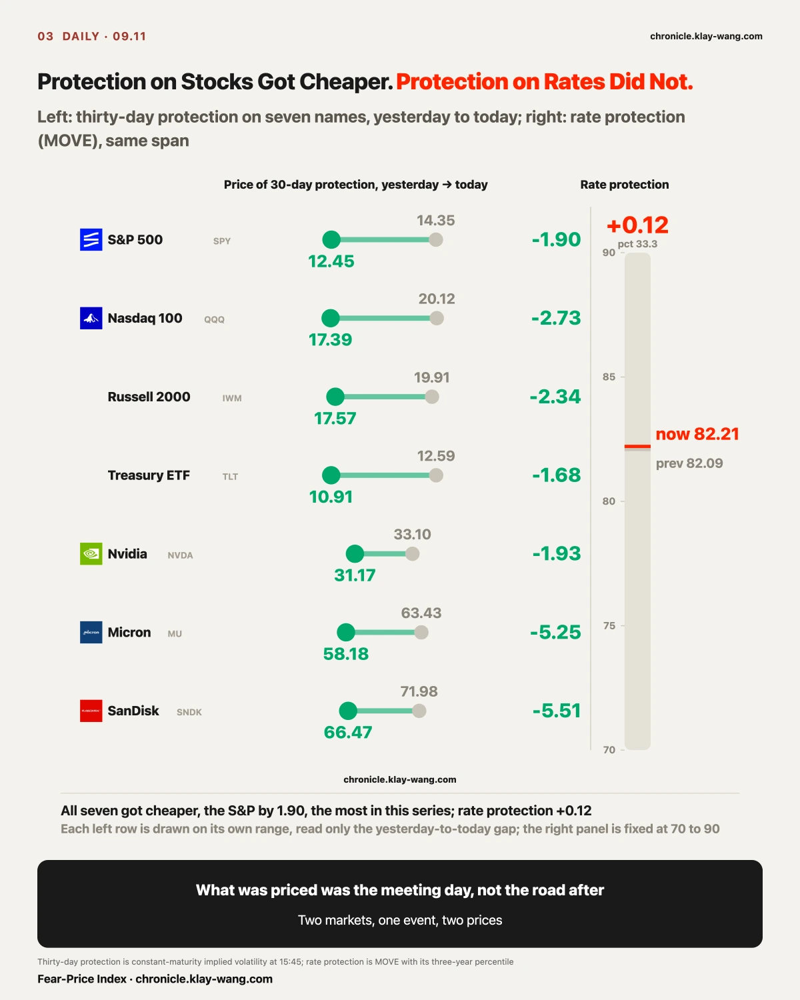
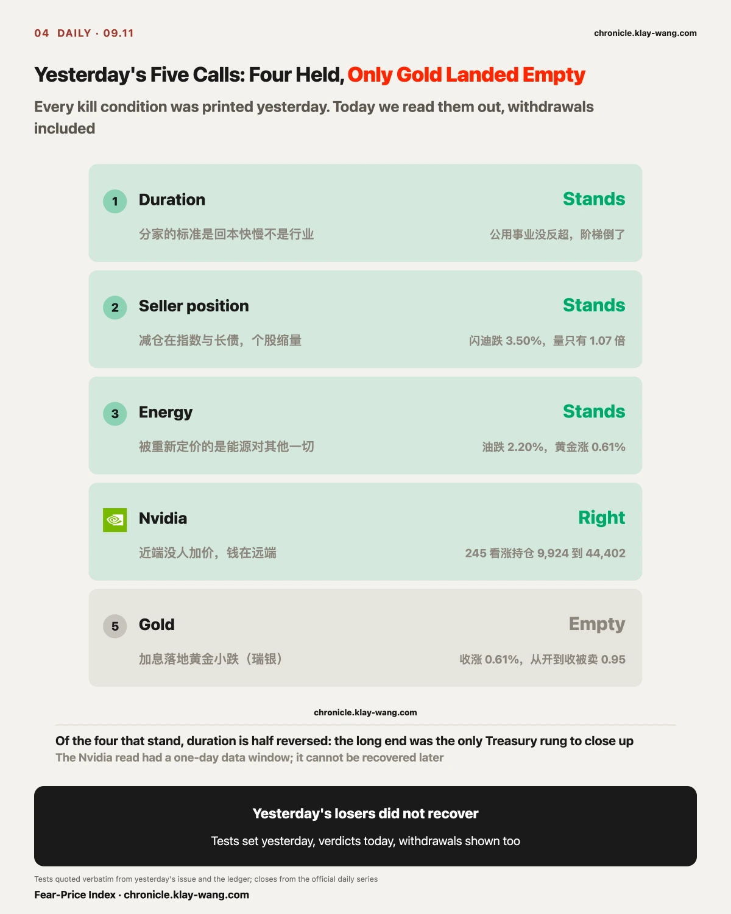
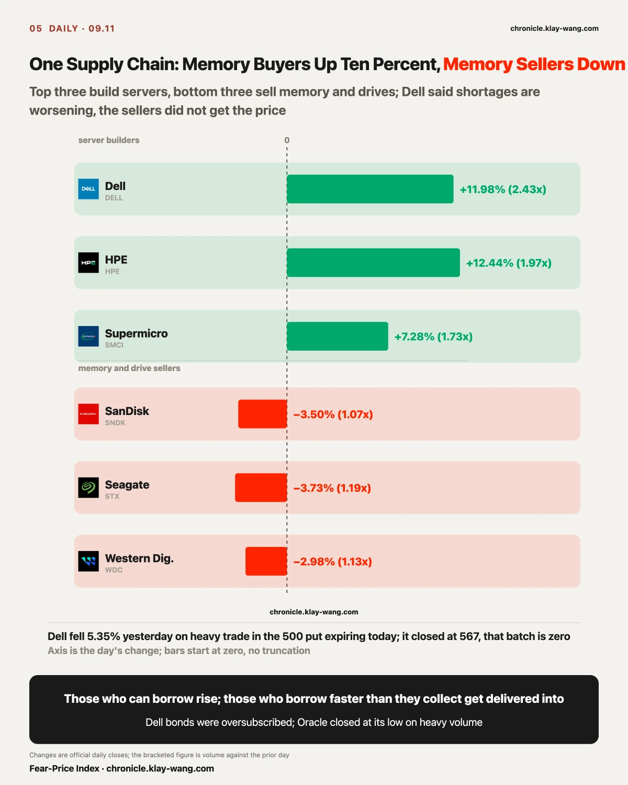
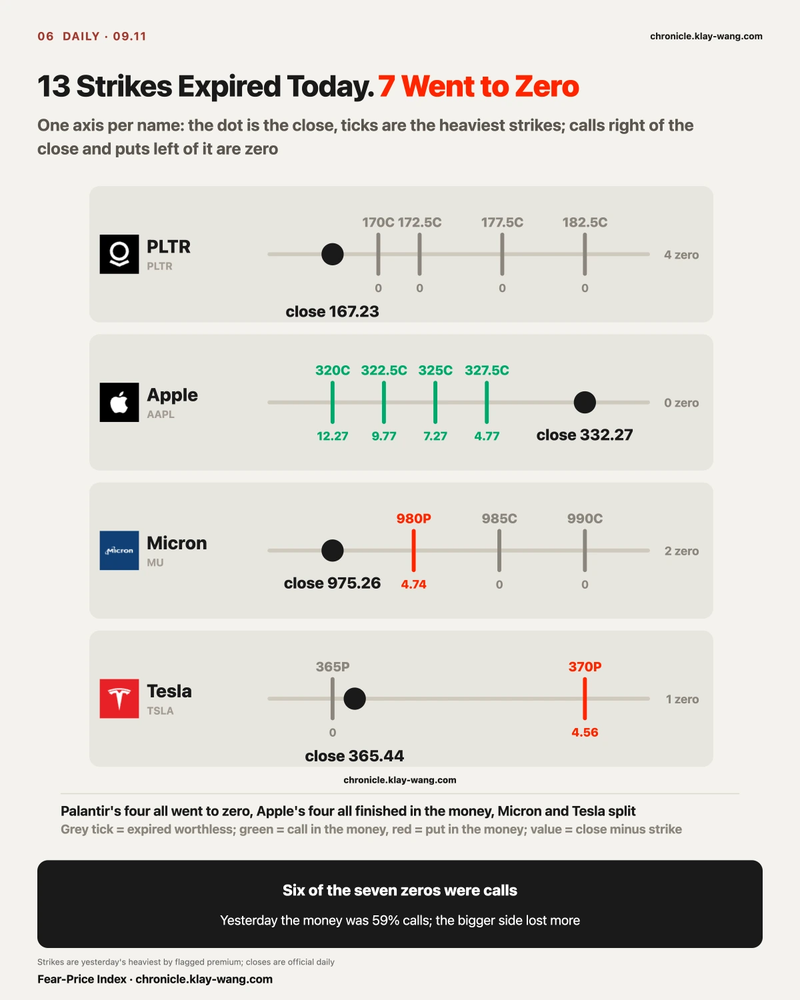

Fear-Price Index · 2026-09-11 · reading 42.3/100: one-year implied volatility VIX1Y at 21.75, the 42.3rd percentile of the past three years, higher means dearer. Daily ledger and methodology → chronicle.klay-wang.com · Please credit: Fear-Price Index · chronicle.klay-wang.com
Yesterday 52.4, today 42.3, down 10.1 percentiles in a day, the twentieth-largest one-day drop in three years. The five tenors: nine-day 14.47, one-month 15.84, three-month 18.60, six-month 20.39, one-year 21.75. The nine-day tenor fell 3.23 in a day; the one-year fell 0.48.
The nine-day tenor is the one that covers the 09.16 meeting. Yesterday it had been priced up on its own; today that price was taken out entirely. The price of protection against an extreme fall, 147.02, still sits in the 94.9th percentile of its full history. What got cheaper is the next two weeks; the extreme-fall side did not.

August CPI rose 0.4% month over month and 3.4% year over year, both as expected. Core rose 0.3% against 0.2% expected, the highest since May; core year over year 2.4%, as expected. Gasoline rose 3.9% after two months of declines, more than a third of the month's whole increase from one line item; shelter 0.3%, food 0.1%.
Yesterday PPI had diesel as more than a third of the goods increase with core below expectations; today CPI has gasoline as more than a third of the whole increase with core 0.1 above. Two days, the same story: energy lifts the headline. The difference is the core layer, below expectations yesterday and above them today.
None of the three bank forecasts reached 0.3 before the print: Bank of America 0.22%, JPMorgan 0.21%, Citi 0.184%. JPMorgan's scenario table gave core above 0.30% a 10% probability, with a script of the S&P down 1.5% to 2.5%. Odds of a September hike went from 49% a week ago to 61% on Wednesday, 71% on Thursday, and around ninety percent after today's print.
The S&P rose 0.85%. JPMorgan's script and the result differ by three points.
My call: this CPI changed nobody's position. The extra 0.1 in core came entirely from gasoline; shelter at 0.3% did not accelerate, and the market only reads the shelter-and-services layer, which did not move. So odds went from seventy to ninety and stocks rose: the extra twenty percent brought no new money in; yesterday's seventy was counted again. If the price of thirty-day protection on the S&P is back above 14 on Monday, the market did treat it as news, and this call is overturned.

The S&P opened +0.91%, closed +0.85%, and lost 0.06% during the session. The Nasdaq 100 opened +0.99% and lost 0.11% in the session. The Russell opened +1.05%, lost 0.63% in the session, and closed in the bottom 4% of its range. Long bonds opened +0.64% and closed +0.11%, at the 9th percentile of the range. Gold opened +1.56% and closed +0.61%. Utilities opened +0.87% and closed −0.31%.
The gap is money from overnight; the session is the people who can trade. Overnight money lifted the price today, and the people in the session neither followed nor sold. In one sentence: the hike had already been paid for at seventy percent yesterday, today's data pushed that to ninety, and nobody changed their mind over it, so nobody chased and nobody sold.
What actually moved was the price of protection. Not one of the twenty-nine names saw its thirty-day protection get dearer today. The S&P went from 14.35 to 12.45, the Nasdaq from 20.12 to 17.39, long bonds from 12.59 to 10.91, SanDisk lost 5.51 points in a day, Micron 5.25. The one-year barely moved, the S&P from 18.05 to 17.88. Everything that got cheaper was at the near end, the price of the meeting day.
The same day the price of rate protection (MOVE) went from 82.09 to 82.21, the 33.3rd percentile, and did not get cheaper at all. Those protecting against rates did not cancel; the bond market has not treated this as settled.
My call: what got cheaper today is protection for the meeting day; protection for the road after the hike did not. Those protecting stocks cancelled, those protecting against rates did not; two markets put two prices on one event. If the price of rate protection falls back below 76 after 09.16, the rate protectors have cancelled too and this call is withdrawn; if the price of thirty-day protection on the S&P climbs back above 14 before 09.15, today's drop was hedges expiring on a weekly expiry day, not people cancelling, and this call is withdrawn as well. 669 million in contracts expired today, and that part cannot be left out of the count.
One line going around says buy the rumor, sell the fact: once the hike lands next week, sell. On the hike itself it does not hold; the expectation has been paid for and the fact carries no new money to sell. Where it holds is the other bracket: ninety is not a hundred, and the remaining ten is the asymmetric side. No hike, and long yields and gold react far more than they would to a hike. Protection for the week after the meeting was being bought today: 26,000 S&P puts at 740 for the 09.25 expiry, eight times open interest, and 22,000 at 760, nine and a half times; the same day 23,000 calls at 785, six times. Both sides were added to, and what they were added to is the road after the meeting.

Duration. The case was that the split ran on payback speed, not sector, with a kill if utilities beat staples and the bond ladder inverted. Today staples +0.35%, utilities −0.31%, no reversal; one-to-three-year −0.06%, seven-to-ten-year −0.19%, twenty-year-plus +0.11%, the ladder inverted, and the long end was the only rung to close up. One of two conditions met, the call stands, with a note: the ladder did invert today.
Seller position. The case was index and long-bond selling on heavy volume with single names on light volume, kill if the memory chain fell further on heavy volume. SanDisk fell 3.50% on 1.07 times yesterday's volume; Micron fell 0.22% on 0.83 times. Light volume on a decline is nobody showing up, not somebody delivering. Stands.
Energy. Kill if oil and gold fell together. WTI fell 2.20% and gold rose 0.61%, opposite directions, stands. Tanker freight rose 11.83% while oil itself fell; what tracks Hormuz is the ships, not the oil.
Nvidia. The case was no bid at the near end, money at the far end, with the test that settled open interest in the December 245 calls had to grow by more than three tenths of the volume. This morning's settlement took open interest from 9,924 to 44,402, up 34,478 contracts, 85% of yesterday's volume. Right; the money stayed out there. Today the price of its thirty-day protection fell another 1.93 and the stock opened +1.32% and closed −0.03%, in the bottom 4% of its range.
Gold. UBS's ledger landed empty: a hike landing should mean a small dip in gold, and gold closed up 0.61%. But it opened up 1.56% and was sold 0.95 of a point from open to close. The direction moved toward UBS's call; it just did not get there.

Yesterday's biggest losers were the slowest-payback names, and today they did not recover. Memory kept falling: SanDisk −3.50%, Seagate −3.73%, Western Digital −2.98%. The end that buys their product rose ten percent: Dell +11.98% on 2.43 times volume; HPE +12.44%; Supermicro +7.28% on 1.73 times.
Dell said at the Goldman conference yesterday that shortages in memory and accelerators are getting worse. Today the buyers of memory rose and the sellers fell; the price of the shortage did not land on the sellers. Dell had three items of its own: an RBC initiation, a bond offering heavily oversubscribed, an upcoming move into the S&P 100. All three are reasons it can borrow and be bought. When it fell 5.35% yesterday the heaviest contract was the 500 put expiring today; it closed at 567, and that batch went to zero.
Oracle gave the other answer. Last night it produced a payback schedule and rose 4.35% after hours to 159.59. Today it opened +7.51%, reached 165.99, and closed at 150.28, down 1.74%, on 1.41 times volume, in the bottom 3% of its range. Heavy volume, a spike, a close near the low: someone used the schedule to deliver stock. The same day SpaceX's CFO said the payback on its compute build could be under a year, and it rose 2.04%.
My call: among those who can show a payback schedule, the market still sorts two ways, the ones who can borrow rise, the ones who borrow faster than they collect get delivered into. If SanDisk and Micron rebound next week while Dell gives back half, today's two ends were Dell's own three items, not a split in the chain, and this call is overturned; if Oracle recovers 159.59, today was news-day turnover, not delivery, and this call is overturned too.
Palantir's call cluster logged on 09.02, four strikes from 170 to 182.5, closed at 167.23 and all went to zero. On 09.03 it was worth 2.9 times its cost; the six tenths that stayed did not leave at the top.
Apple closed at 332.27, and the four calls that carried the most money yesterday, 320, 322.5, 325 and 327.5, all finished in the money; the 320 went from 6.15 to 12.27. Micron closed at 975.26: the 985 and 990 calls went to zero and the 980 put was worth 4.74. Tesla closed at 365.44: the 365 put went to zero and the 370 put was worth 4.56.
Seven of thirteen went to zero, and six of the seven were calls. The money on today's expiry was 59% calls yesterday; the bigger side lost more.